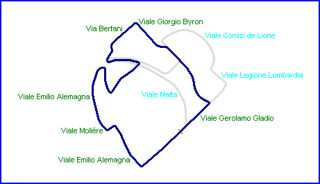
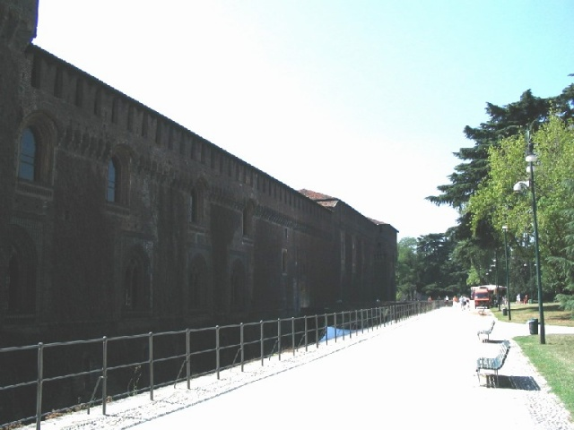
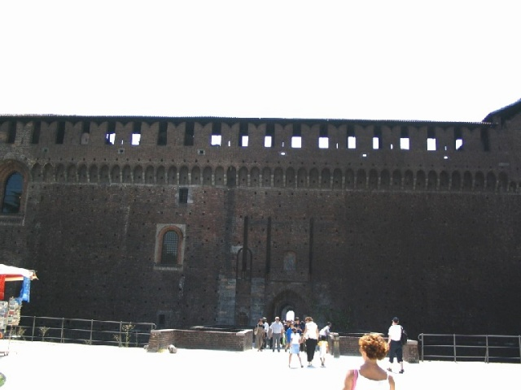

Place of the start
Parco Sempione, Milan, Italy
Type: Street Circuit
Length: 1.597 Miles / 2.570 km [1936-1937]
1.740
Miles / 2.800 km [1946]
Used: 1936-1937, 1946
Photographs Taken: July 2004

Place of the start

same place, looking back

Same place, looking left (Arco della Pace)

Same place, looking right (Sempione castle)
Return to racingcircuits.net's Photo Archive Main Index
 Milano:
Parco Sempione - by Guido de Carli [http://www.gdecarli.it]
Milano:
Parco Sempione - by Guido de Carli [http://www.gdecarli.it]
Photographs ©Michel Marti. Reproduced here with kind permission.